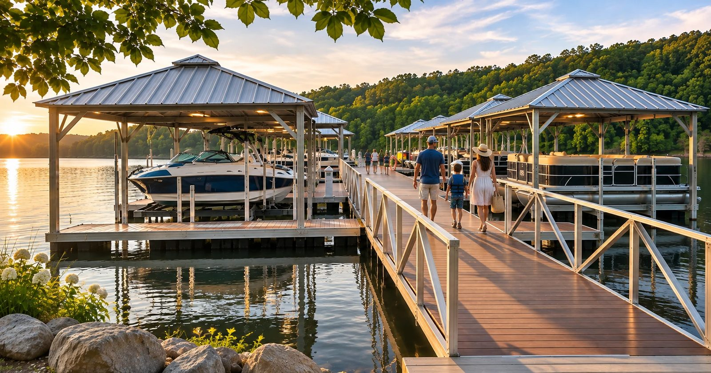

Few amenities bring waterfront neighbors together like shared lake access, but few community investments trigger as much debate. When multiple property owners, board trustees, and slip renters try to design one unified shoreline structure, minor miscalculations quickly spiral into expensive redesigns and budget overruns.
In the rush to put preliminary numbers on paper, association directors often search online for dock builders near me to get rough estimates before determining the fundamental scope of their shoreline footprint.
At Bar H Solutions, we guide property associations and commercial harbor teams through every stage of custom dock manufacturing. We know that accurate pricing requires far more than counting boats. You need clear technical data, verified environmental baselines, and board-level consensus before fabrication can start. This planning guide breaks down the critical decisions your committee needs to settle before submitting a quote request.
Planning snapshot for boards and harbormasters
Settling these five points before you request a quote keeps the design on track and saves your committee rounds of revisions.
- Audit real boat sizes first. Collect total length, beam, and loaded weight metrics directly from owners rather than guessing based on boat registrations.
- Respect waterbody dynamics. Fluctuating water depths, heavy wakes, and winter ice determine whether you need floating frames, heavy anchoring, or specialized gangways.
- Plan for modern lift weights. Heavy fiberglass boats and double-decker pontoons require reinforced frame joints and dedicated electrical infrastructure.
- Choose corrosion-resistant materials. Marine-grade 6061-T6 aluminum frames eliminate the continuous maintenance, rot, and splintering common with treated lumber.
- Confirm shoreline rules early. Clarify riparian property boundaries, setbacks, and environmental permits with regional regulators before finalizing any layout.
Defining the scope: private HOAs vs. commercial marinas
A waterfront structure must match the operational goals of the facility hosting it. Private residential communities and commercial marinas work under completely different daily demands, which dictates how the layout must be designed.
Managing member expectations in residential HOAs
Shared dock planning for residential associations requires balancing many different personal interests. One homeowner owns a 26-foot surf boat requiring an automated lift, another needs low-profile boarding for touring kayaks, and others simply want open bench seating to watch evening sunsets. Your planning committee should establish:
- Clear slip allocation rules and waitlist management policies
- Strict limits on maximum overall vessel length and beam
- Fair shared utility costs for water hookups and shore power
- Safe, zero-barrier walkways built to match ADA Waterfront Accessibility Guidelines for ramps and access paths
Maximizing flow and revenue for commercial marinas
Commercial operators evaluate dock layout through revenue density, foot-traffic safety, and turnover speed. Marina docks must support continuous pedestrian traffic, heavy cart loading, and organized fueling operations. Wide primary walkways, durable perimeter fendering, and clean utility runs ensure long-term commercial functionality and meet NFPA 303 Fire Protection Standards for Marinas.
Evaluating shoreline conditions and water dynamics
A dock is only as good as its foundation and anchoring design. Before our fabrication team can calculate structural loads, we need to know what natural forces your shoreline will face throughout the year.
Water depth swings and shoreline profiles
Seasonal drawdowns, dam cycles, and regional weather determine dock geometry. In shallow, static bays, stationary systems may work. However, in deep reservoirs or regions with steep shorelines, hiring specialized floating dock contractors is necessary. Floating setups automatically adjust with water levels, keeping the freeboard height steady through dry summers and spring runoff.
Wind, current, and environmental loads
Your shoreline exposure determines how much strength we must build into the framing:
- Fetch distance and wave impact. Open water exposed to miles of wind produces rhythmic wave slap that loosens inferior structural joints.
- River currents and tidal flow. Fast currents create constant lateral pull, requiring heavy-duty internal spud wells or thick shore stiff-arms.
- Winter protection. Freezing lakes require frames built for fast seasonal removal or engineered strong enough to handle sub-surface ice pressure.
Building your vessel inventory and layout checklist
Accurate vessel measurements are essential for planning a safe, functional marina layout and obtaining reliable fabrication quotes. Before designing slips, collect these details from boat owners:
- Overall length (LOA). Include swim platforms, bow pulpits, and tilted outboard motors.
- Vessel beam. Allow approximately 2 to 3 feet of additional clearance for fenders and easier docking, subject to site needs.
- Loaded draft. Account for seasonal low-water levels and underwater obstacles.
- Total weight. Include the hull, fuel, equipment, passengers, and gear.
- Boat lift requirements. Identify lift capacity, structural support needs, and electrical demands.
Planning for modern boat lifts
Heavier wakesurf boats and luxury pontoons may require reinforced attachment points, structural cross-bracing, and dedicated electrical infrastructure. Proper planning helps prevent frame stress, supports safe lift operation, and reduces costly modifications later.
Material longevity: why aluminum outperforms wood and steel
Frame materials determine your long-term ownership costs. While pressure-treated wood or basic painted steel may seem affordable upfront, their regular upkeep quickly drains community reserve funds.
We specialize in precision-engineered custom aluminum docks to give communities durable, maintenance-free waterfront infrastructure.
The marine aluminum advantage
Marine-grade aluminum alloys naturally resist rust, corrosion, and sun damage. Unlike steel, aluminum does not chip or peel. Unlike treated wood, aluminum never rots, warps, or introduces splinter risks to barefoot swimmers. For a deeper comparison, see aluminum vs. wood docks.
Long-term value and structural performance
Aluminum provides a high strength-to-weight ratio. This reduces deadweight strain on flotation billets and makes it easier to expand modular sections down the road. When paired with slip-resistant composite decking or aluminum planking, these structures provide more than 30 years of service with little more than an occasional washdown.
Permitting, zoning, and shoreline regulations
Marine construction requires strict adherence to local, state, and federal laws. Starting fabrication without written approval can lead to stop-work orders and expensive fines.
- Federal jurisdiction. The US Army Corps of Engineers Regulatory Program evaluates navigable waters, shoreline dredging, and natural resource protection.
- State environmental agencies. State fish, wildlife, and natural resource departments monitor water quality and seasonal spawning grounds.
- Local municipalities and HOAs. Local zoning boards enforce visual corridors, night lighting limits, and boundary setbacks.
Proven engineering for local waterfronts
Every lakebed, river current, and local permitting office comes with its own set of challenges. We manufacture dock systems specifically engineered to handle regional weather, shifting soil profiles, and water fluctuations. We work closely with HOA directors, commercial harbor masters, and community developers to turn early ideas into safe, durable, and fully compliant waterfront systems. By managing custom metal fabrication, structural welding, and modular layouts in-house, we deliver commercial-grade quality to every project.